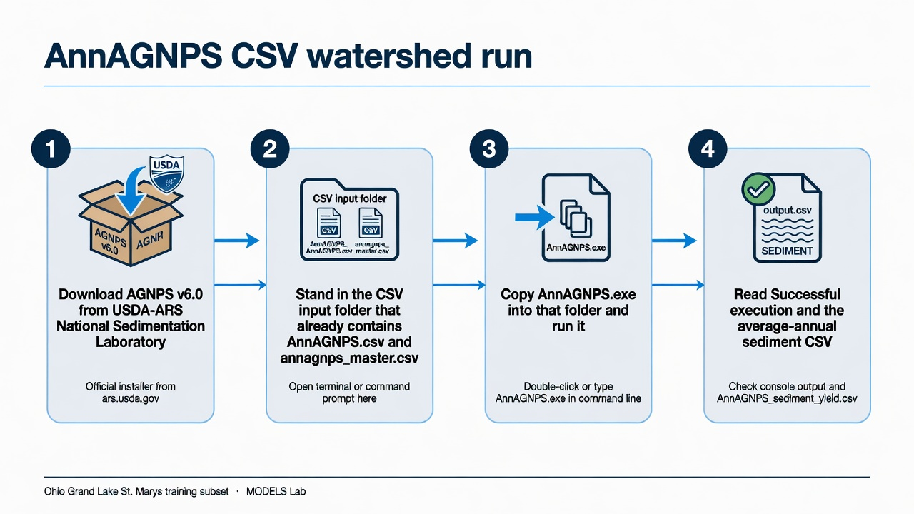
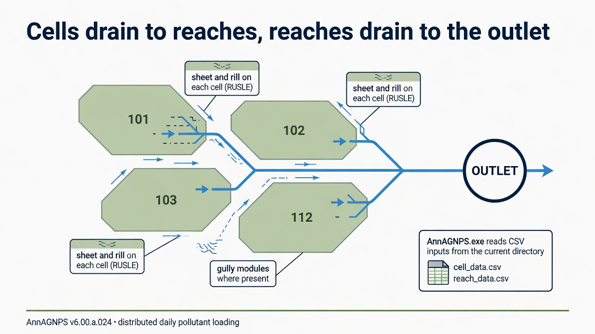
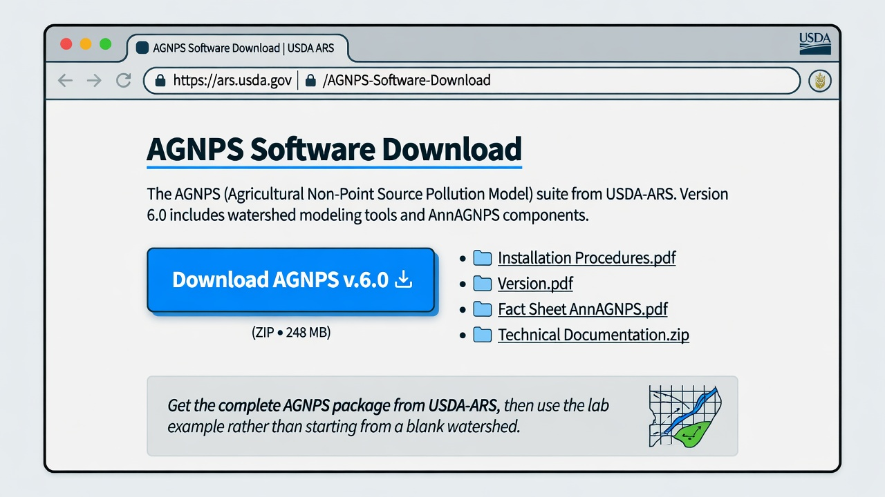

AnnAGNPS
A first successful run of the Annualized Agricultural Non-Point Source model on Windows. You download the USDA-ARS AGNPS package, stand in a CSV watershed folder, run AnnAGNPS.exe, and read the average-annual sediment and water files. GIS is not required for this path.

AnnAGNPS.csv from the current directory.1. What this model does
AnnAGNPS is a continuous, daily, watershed-scale pollutant loading model. Landscape cells generate runoff, sediment, nitrogen, phosphorus, and organic carbon. Those loads move into reaches, and the reaches connect to an outlet. Sheet and rill erosion on a cell follow RUSLE relationships. Gully and channel processes are separate modules. The time step is daily; the files you will open first are average annual summaries.

The lab’s pinned engine is AnnAGNPS.exe version v6.00.a.024_2024.05.23 (64-bit), from the complete AGNPS 6.0 package.
2. Get the software
Download the complete self-extracting AGNPS package from the USDA-ARS National Sedimentation Laboratory. That archive is the one that includes the pollutant-loading engine, TopAGNPS, the Input Editor, STEAD, weather tools, and the manuals. The ARS software catalog entry is software id 524.

On this host the extracted tree is already at C:\Grok\Models\installs\AnnAGNPS. If you are repeating the lab path, you can skip the download and use that folder.
3. The lab install
The AGNPS tree has several programs. Only one of them is the model you run for this tutorial.
| Piece | Where | First-run role |
|---|---|---|
AnnAGNPS.exe |
AGNPS\PLModel\Execute\ |
The pollutant-loading engine. Copy it into the CSV folder and run it there. |
| CSV watershed inputs | AnnAGNPS.csv, annagnps_master.csv, plus climate\, watershed\, general\, simulation\ |
Required. The master file lists every CSV the engine will read. |
| Ohio example | test_run\AGNPS_Watershed_Studies\OH_AGNPS_Example_Watershed\ |
The standing lab example (Grand Lake St. Marys / Chicago training subset). Copy from here; do not treat it as a scratch folder. |
| TopAGNPS, Input Editor, STEAD, agGEM | AGNPS\DataPrep\ and AGNPS\OutputProcessor\ |
Useful later. Not needed to finish this tutorial. |
installs\AnnAGNPS\golden is a junction to test_run. The verification below used a new working copy, not that junction, so the golden tree stays untouched.
4. Novice path: run the Ohio example
The example is a five-year continuous run (2006–2010, two initialization years) for a small agricultural watershed near Celina, Ohio. Precipitation in the output header is 38.492 inches per year. You will copy the CSV inputs into a fresh folder, drop the executable beside them, and run from that folder.
$src = "C:\Grok\Models\installs\AnnAGNPS\test_run\AGNPS_Watershed_Studies\OH_AGNPS_Example_Watershed\4_Editor_DataSets\CSV_Input_Files"
$run = "C:\Grok\Models\installs\AnnAGNPS\tutorial_run_20260913"
New-Item -ItemType Directory -Force -Path $run | Out-Null
Copy-Item "$src\AnnAGNPS.csv","$src\annagnps_master.csv" $run
foreach ($d in "climate","general","simulation","watershed") {
Copy-Item "$src\$d" "$run\$d" -Recurse -Force
}
Copy-Item "C:\Grok\Models\installs\AnnAGNPS\AGNPS\PLModel\Execute\AnnAGNPS.exe" $run
Set-Location $run
.\AnnAGNPS.exe
On this host you can instead rerun the lab wrapper, which copies those inputs, executes the engine, asserts the numbers below, and rewrites the figure:
python C:\Grok\Models\tools\run_annagnps_tutorial_verify.py
Stand in the folder that contains AnnAGNPS.csv. The engine does not take a project path on the command line. If you run it from PLModel\Execute, it will not see the Ohio inputs.
5. Confirm the run
The console should end with Successful execution and normal termination of AnnAGNPS. Then open the average-annual files written beside the executable.
| Check | Where | This verification (13 Sep 2026) |
|---|---|---|
| Console | run_stdout.txt |
Successful execution |
| Cell 101 sediment subtotal | AnnAGNPS_AA_Sediment_load_(unit-area).csv |
2.2990 t/ac/yr |
| Outlet water load | AnnAGNPS_AA_Water_load_(unit-area).csv |
14.074 in/yr |
| Cell 101 nitrogen subtotal | AnnAGNPS_AA_Nitrogen_load_(unit-area).csv |
45.412 (unit-area file; not in the automated test) |
The automated test is test_tutorial_run inside tools\run_annagnps_tutorial_verify.py. It requires the console phrase, cell 101 sediment equal to 2.2990 t/ac/yr within 0.0005, and outlet water equal to 14.074 in/yr within 0.0005. That is the same numeric check as tools\test_all_models.ps1 for AnnAGNPS, pointed at a new working copy rather than the golden junction.
6. This verification’s figure
The 13 Sep 2026 run wrote 91 contributing cells. Gully load dominates several of the highest unit-area cells; sheet and rill are the rest of each bar. Cell 101, the test cell, is 2.299 t/ac/yr. Watershed precipitation is 38.492 in/yr; outlet water yield is 14.074 in/yr.

installs\AnnAGNPS\tutorial_run_20260913. Left: twelve highest unit-area sediment cells, sheet-and-rill versus gully. Right: water-yield histogram with the outlet value marked.If you rerun the wrapper, this PNG is rewritten in the run folder and in each tutorial images\ home.
7. After the first success
Once the engine has written those CSVs, you can open phosphorus and organic-carbon files the same way, or bring the average-annual tables into STEAD. Building a new watershed from a DEM is TopAGNPS plus the Input Editor; that is a different lesson. This one stops at a verified CLI run of the pollutant-loading model.